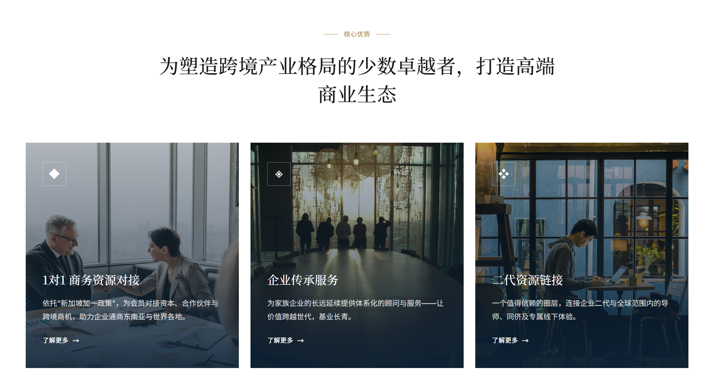
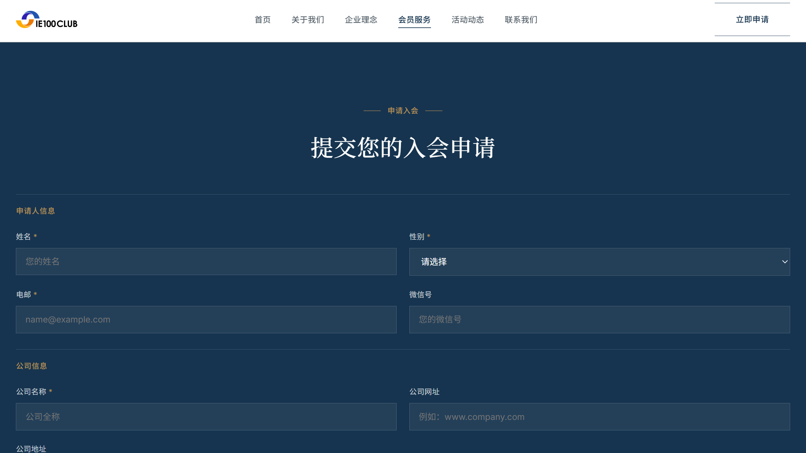
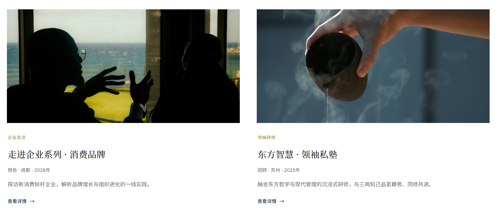
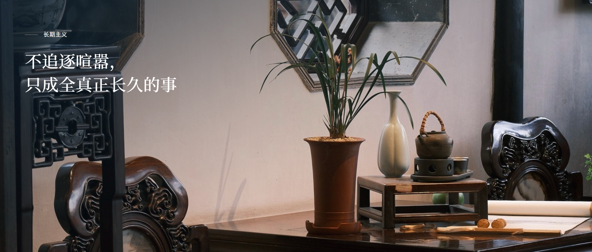

IE100 Club
01 Overview
IE100 connects Chinese entrepreneurs worldwide — capped at one hundred members, invitation-only. A closed, high-trust network of established industrialists, young founders, and second-generation successors. Global by design, anchored in Singapore.
The brief: build a digital presence that signals belonging before a single word is read. This audience recognises immediately when something is built for them versus engineered for scale. Every decision had to carry weight.
The network spans Southeast Asia, North America, Europe, Australia and beyond — across manufacturing, technology, finance, trade, real estate and more. Singapore isn't a boundary; it's the strategic pivot the whole ecosystem turns on.
- Vision.
- Connect Chinese entrepreneurs across the globe, and redraw the map of value.
- Mission.
- With Singapore as the hub, build a high-trust collaboration network for Chinese business worldwide.
- The Model.
- One hundred members, three forces — seasoned industrialists, young founders, and business heirs — held in a single closed-loop ecosystem where every connection must create real value.




02 Design Approach
Dark photography. Large Chinese type. A gold accent used exactly once per section. The visual language borrows from private banking — not the startup world.
Prestige is communicated through restraint. Near-black backgrounds anchor the full-bleed photography and let the Chinese headline typography read with weight. Clean white sections for the service cards create visual breath — contrast that signals craft rather than compromise.
- Bilingual by architecture.
- All content authored in Simplified Chinese — not translated but written for the audience. The nav, CTAs, and body copy are all Chinese-first. The site doesn't translate; it speaks.
- Photography as positioning.
- Hotel lounges, boardrooms, rooftop gatherings. Each image was chosen to communicate the social texture of the club — warm but selective, global but closed.
- Gold accent, used sparingly.
- A single warm gold runs through section labels, service icons, and link text. It marks hierarchy without decorating everything.

03 Website
The site covers the full member journey — from first impression to application. Each section has a distinct visual register that reflects its function.
- Homepage.
- Two hero treatments — hotel lounge and boardroom — show the dual dimensions of the club: intimate and international. Opening statement loads before the hero.
- About & Philosophy.
- The four values that govern the network — value first, cross-generational co-creation, global vision, and trust above all. Stated plainly, the way the club itself operates.
- Member Services.
- Three pillars — 1-to-1 business matching, enterprise succession advisory, and the second-generation network — each a card with a dark photo overlay and a gold icon. Scannable in seconds.
- Events & Activities.
- Annual forum, quarterly salons, corporate site visits, and the second-generation programme. A structured catalog with entry criteria visible.
- Leadership & Membership.
- Founding team, advisory council, and the application path — the most trust-critical pages. Criteria stated clearly; for this audience, transparency about selectivity is itself a trust signal.

